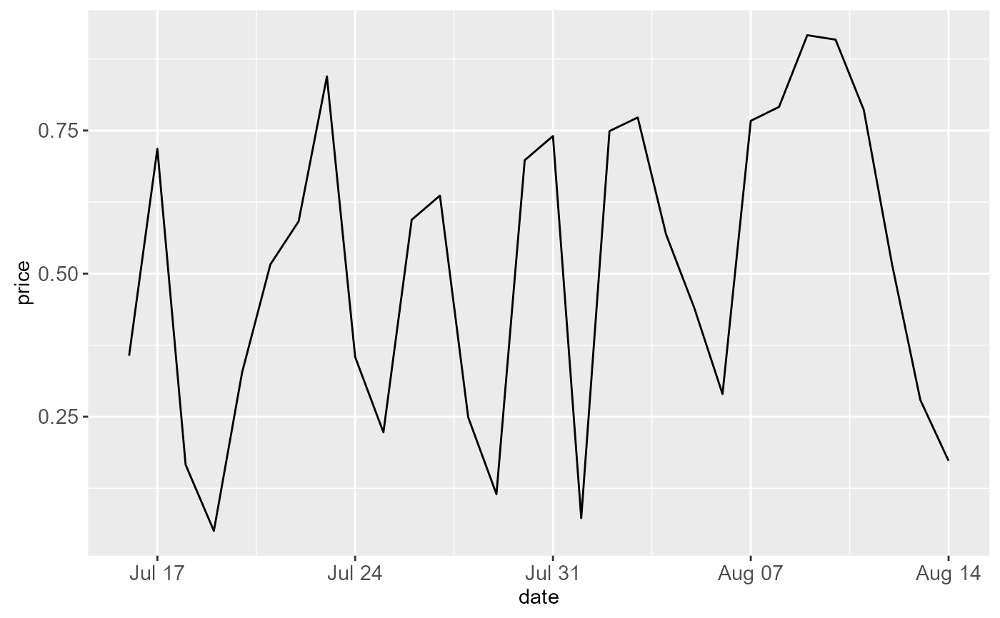
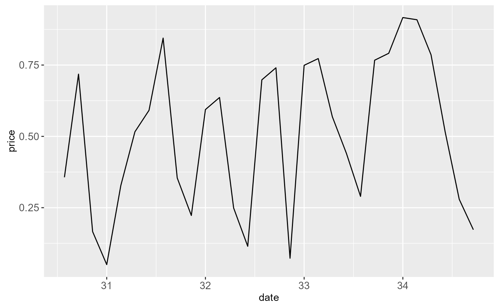
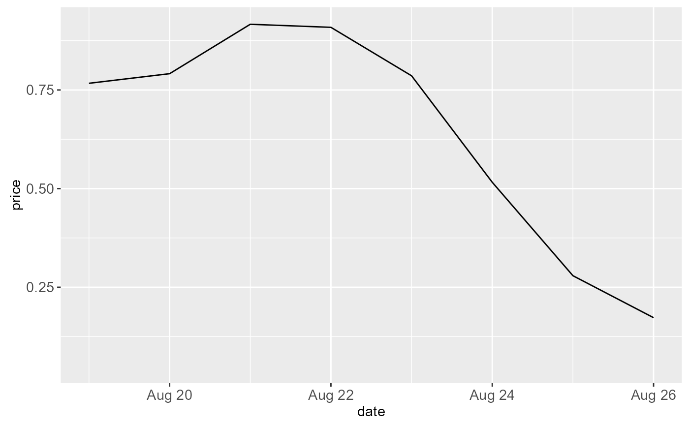

Use scale_*_date with Date variables, and
scale_*_datetime with POSIXct variables.
Usage
scale_x_date(
name = waiver(),
breaks = waiver(),
date_breaks = waiver(),
labels = waiver(),
date_labels = waiver(),
minor_breaks = waiver(),
date_minor_breaks = waiver(),
limits = NULL,
expand = waiver()
)
scale_y_date(
name = waiver(),
breaks = waiver(),
date_breaks = waiver(),
labels = waiver(),
date_labels = waiver(),
minor_breaks = waiver(),
date_minor_breaks = waiver(),
limits = NULL,
expand = waiver()
)
scale_x_datetime(
name = waiver(),
breaks = waiver(),
date_breaks = waiver(),
labels = waiver(),
date_labels = waiver(),
minor_breaks = waiver(),
date_minor_breaks = waiver(),
limits = NULL,
expand = waiver()
)
scale_y_datetime(
name = waiver(),
breaks = waiver(),
date_breaks = waiver(),
labels = waiver(),
date_labels = waiver(),
minor_breaks = waiver(),
date_minor_breaks = waiver(),
limits = NULL,
expand = waiver()
)Arguments
- name
The name of the scale. Used as axis or legend title. If
NULL, the default, the name of the scale is taken from the first mapping used for that aesthetic.- breaks
One of:
NULLfor no breakswaiver()for the default breaks computed by the transformation objectA numeric vector of positions
A function that takes the limits as input and returns breaks as output
- date_breaks
A string giving the distance between breaks like "2 weeks", or "10 years". If both
breaksanddate_breaksare specified,date_breakswins.- labels
One of:
NULLfor no labelswaiver()for the default labels computed by the transformation objectA character vector giving labels (must be same length as
breaks)A function that takes the breaks as input and returns labels as output
- date_labels
A string giving the formatting specification for the labels. Codes are defined in
strftime. If bothlabelsanddate_labelsare specified,date_labelswins.- minor_breaks
One of:
NULLfor no minor breakswaiver()for the default breaks (one minor break between each major break)A numeric vector of positions
A function that given the limits returns a vector of minor breaks.
- date_minor_breaks
A string giving the distance between minor breaks like "2 weeks", or "10 years". If both
minor_breaksanddate_minor_breaksare specified,date_minor_breakswins.- limits
A numeric vector of length two providing limits of the scale. Use
NAto refer to the existing minimum or maximum.- expand
A numeric vector of length two giving multiplicative and additive expansion constants. These constants ensure that the data is placed some distance away from the axes. The defaults are
c(0.05, 0)for continuous variables, andc(0, 0.6)for discrete variables.
See also
scale_continuous for continuous position scales.
Examples
last_month <- Sys.Date() - 0:29
df <- data.frame(
date = last_month,
price = runif(30)
)
base <- ggplot(df, aes(date, price)) +
geom_line()
# The date scale will attempt to pick sensible defaults for
# major and minor tick marks. Override with date_breaks, date_labels
# date_minor_breaks arguments.
base + scale_x_date(date_labels = "%b %d")

base + scale_x_date(date_breaks = "1 week", date_labels = "%W")

base + scale_x_date(date_minor_breaks = "1 day")
# Set limits
base + scale_x_date(limits = c(Sys.Date() - 7, NA))
#> Warning: Removed 22 rows containing missing values (geom_path).
